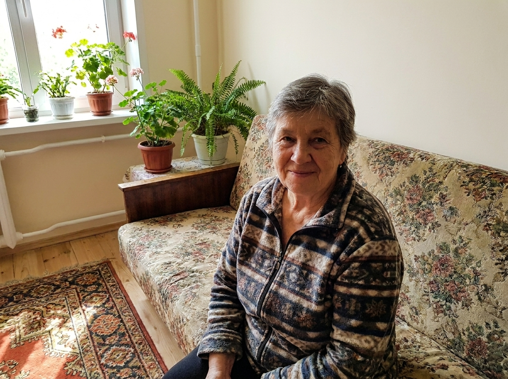
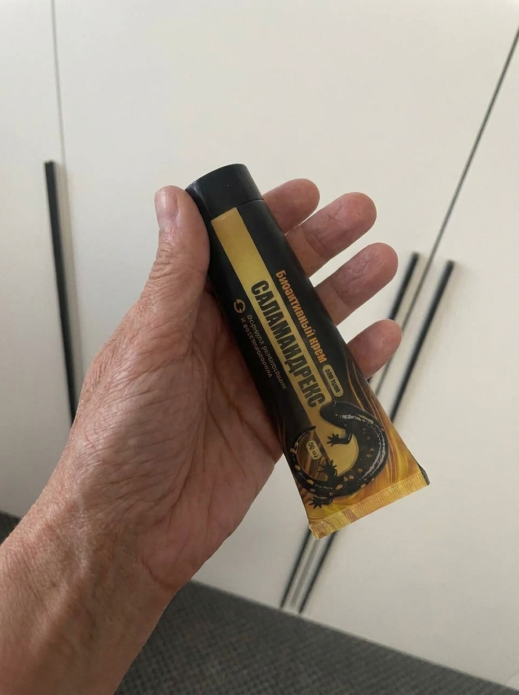
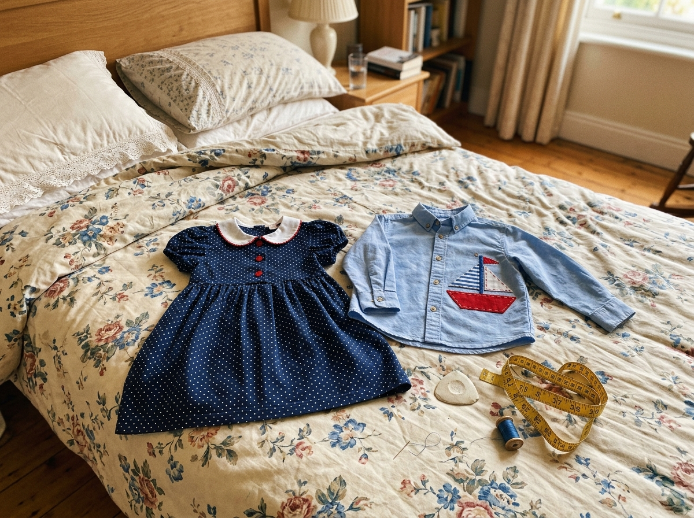
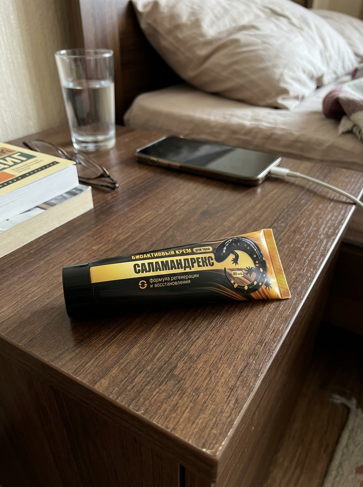

Раньше утро у меня начиналось не с дел
Знаете это чувство, когда ещё глаза не открыла, а уже думаешь не про дела, а про то, как сегодня поведут себя руки и колени?
У меня так было года четыре, если не больше.

Меня зовут Тамара Ивановна, мне 64. Я всю жизнь, тридцать с лишним лет, проработала закройщицей в ателье. Руки у меня были, можно сказать, кормилицы. Заказчицы по многу лет ходили только ко мне. А потом эти самые руки начали меня подводить...
Как тело перестало меня слушаться
Сначала я и значения не придала. Однажды утром не смогла сразу сжать пальцы, чтобы взять чашку. Подержала под тёплой водой — отпустило. Ну, думаю, отлежала, с кем не бывает.
А оно стало повторяться. Каждое утро пальцы будто сводит, к вечеру — тяжесть и какая-то деревянность. Иголка из рук падает, нитку не вдеть. Я свою корзинку с рукоделием всё «на потом» откладывала. Так и отложила.
Потом и колени. Утром, бывало, минут пятнадцать с кровати встаю: сяду, ноги свешу и сижу, жду, пока эта скованность отпустит, чтоб шагнуть. По квартире — за стенку держусь. А лестница в подъезде вообще целая история была.
И к погоде особенно крутило. Соседки даже шутили: «Тамара, дождь-то будет?» А мне не до смеха.
Но обиднее всего было даже не это. А сидеть на диване, смотреть на отложенную корзинку с тканями и понимать, что разучилась делать то, что любила всю жизнь.
Я перепробовала, наверное, всё
Сходила в поликлинику. В очереди полдня. Врач посмотрел, руками развёл: возраст, мол, что вы хотите.
Таблетки выписали. Дорогие, но я думаю — здоровье дороже. Попила недельку, другую. А желудок у меня смолоду слабый, и он мне эти таблетки так припомнил, что я их бросила.
Дальше пошли мази. Чего я только не брала — и по телевизору которые рекламируют, и дорогие заграничные, и из соседней аптеки за копейки. Греющие, охлаждающие, какие-то с перцем. Мажу, кутаю, тру. Помогало — да. На час-полтора. А к утру опять всё по новой.
Дочка, Лена, говорила: «Мам, давай к платному сходим». А я отмахивалась — деньги тратить, что они нового скажут, возраст и возраст.
Я, честно сказать, уже почти смирилась. Решила — ну вот так теперь и будет.
А потом Лена привезла мне крем
Приехала как-то и кладёт передо мной коробочку. «Мам, это не таблетки, мажешь снаружи. Натуральное, я отзывы почитала. Попробуй, хуже точно не будет».

Я, по правде, не поверила. Сколько уже всего испробовано. Но дочку обижать не стала. Думаю — помажу разок, поблагодарю, и в шкаф.
Открыла — пахнет приятно, травой какой-то, не аптекой. Прочитала на коробке: коллаген, гиалуронка — как в кремах для лица, что подороже, — и ещё травы написаны. А главное — глотать ничего не надо, всё снаружи. Мне с моим желудком только этого и не хватало.
Намазала вечером колени и руки, как обычным кремом. Впиталось быстро, на простыне ничего не осталось. Я и забыла про неё.
Что изменилось
Первые дни — ничего. Просто мазалась вечером, и всё.
А потом стала замечать мелочи. Однажды утром встала с кровати быстрее обычного — не сидела свои пятнадцать минут. В другой раз крышку на банке с вареньем сама открутила, без Лены. Ерунда вроде, а я обрадовалась.
Точно не скажу, через сколько — кажется, недели через две, может, побольше — сняла я как-то с полки ту самую корзинку. Села, нитку вдела не с пятого раза, а сразу. И вышила немножко. Пальцы слушались.
Посмотрела на этот кусочек вышивки на коленях — и расплакалась. От радости.
Лене сразу позвонила: «Доченька, я шью».

К зиме я Соне, внучке, платье сшила, а Кириллу — рубашку с аппликацией. Носят с гордостью. А я на руки свои смотрю и думаю: руки-то самые обычные. Просто теперь им снова ничего не мешает.
А дальше пошла просто жизнь
А дальше пошла просто жизнь. Сходила как-то в магазин, поднялась обратно с сумками — и поймала себя на том, что не считаю ступеньки, как раньше. Мелочь, а приятно. На дачу в этот сезон сама две грядки под зелень вскопала, чего года три уже не делала.
Крем теперь просто лежит у меня в аптечке. Каждый день уже и не мажусь — так, когда находишься за день или на даче спину наломаешь. Не лекарство ведь, а уход: надо — взяла, помазала.

Моё обращение к вам
Я не врач и ничего вам не навязываю. Просто рассказала, как было у меня — чтоб вы знали: даже когда кажется, что руки-ноги уже не те и ничего не берёт, можно просто начать чуть иначе о себе заботиться. Я наткнулась на это средство случайно, через дочку. И теперь утром встаю и про дела думаю, а не про то, как бы встать.
Кстати, недавно Лена заходила на их официальный сайт и сказала, что производитель запустил специальную ознакомительную программу. Если заказывать крем для курсового применения, то первую упаковку они отдают за 0 рублей. По-моему, это очень честно — можно начать уход без лишних трат.
Оставлю ссылку ниже, чтобы вы могли узнать подробности.
Пять активных компонентов для ухода в зоне суставов
Сильный состав, собранный для одной задачи — ежедневного ухода за тканями там, где вы наносите крем: колени, кисти, спина.
- Коллаген и эластин. Белки, на которых держится упругость и эластичность тканей. С возрастом их становится меньше. В формуле это основа ухода в области сустава.
- Гиалуроновая кислота (низкомолекулярная). За счёт маленьких молекул увлажняет не поверхностно, а в глубине — отсюда мягкость и комфорт в зоне нанесения, без стянутости.
- Хондроитин. Удерживает влагу и поддерживает ткани напитанными и эластичными — в отличие от пересушивающих «жгучих» мазей.
- Пептид меди (GHK-Cu). Активный компонент, который ценят в профессиональном уходе. В обычных аптечных кремах его не бывает — здесь он в основе формулы.
- Растительный комплекс: пихта, хвощ, конский каштан. Природная часть формулы — ощущение свежести, лёгкости и тонуса, мягкий травяной аромат вместо резкого.
Без гормонов и без жгучих разогревающих компонентов. Ничего не нужно принимать внутрь — только наружный уход, утром и вечером.
Частые вопросы
Раньше вы, скорее всего, пробовали средства для разового облегчения. Здесь другая логика — это ежедневный уход, который работает не сразу и только на регулярности.
Да, сейчас есть такая ознакомительная квота. Уход за суставами требует времени, поэтому первую упаковку дарят при оформлении всего курса. Всё по-честному: вы не переплачиваете на старте, а производитель знает, что довольный человек — это самая надежная реклама. Если крем вернет вам комфорт, вы наверняка порекомендуете его тем, кто тоже мучается с суставами.
Крем наносится только на кожу и внутрь не принимается, поэтому желудок он не нагружает, как таблетки. Но если у вас есть хронические состояния или аллергия на травы и эфирные масла — перед применением посоветуйтесь со своим врачом и изучите состав.
Ничего сложного и никакой предоплаты. Вы оставляете только имя и телефон, вам перезванивает специалист и всё оформляет сам. Платите потом, когда посылка придёт, — прямо при получении.
Доставка и оплата
Платить заранее не нужно — это самое главное. Вы оставляете имя и телефон, вам перезванивает специалист, уточняет адрес и оформляет заказ. Посылку вы оплачиваете только тогда, когда получите её на руки — на почте или у курьера.
Как получить крем по специальной квоте (за 0 руб.)
В рамках ознакомительной акции от производителя первую упаковку «Саламандрекс» можно получить за 0 рублей при оформлении курсового ухода.
Количество акционных упаковок ограничено квотой. Узнать, остался ли крем в наличии по вашему региону, можно через официальную форму ниже. Консультация бесплатная и ни к чему вас не обязывает.
Как забронировать упаковку:
- Впишите своё имя и номер телефона в форму ниже.
- Дождитесь звонка специалиста — он ответит на все вопросы, подберет курс под вашу ситуацию и закрепит за вами стартовую упаковку за 0 рублей.
- Вы получаете посылку и оплачиваете заказ только после получения на руки (на почте или у курьера). Никакой предоплаты не требуется!